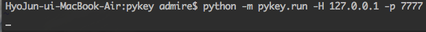
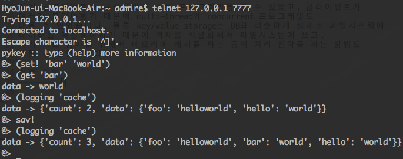

2010.09 – 2010.10
python으로 key/value storage를 구현했습니다. 텔넷으로 서버에 접속해서 사용할 수 있도록 구현하였고, 클라이언트는 이전 프로젝트에 구현했던 bendy를 이용해서 제어할 수 있게했습니다. set, get, redo, undo 같은 간단한 명령어들을 이용해서 key/value storage를 사용할 수 있습니다. 오픈소스로 진행했기때문에 레파지트리 (https://github.com/admire93/pykey) 에서 소스코드를 보실 수 있습니다
서버-클라이언트를 구성하면서 소켓 프로그래밍을 할 수 있었고, 클라이언트가 여러개 붙어야했기 때문에 multi-thread와 concurrent 프로그래밍도 배울 수 있었습니다. 물론 key/value storage는 DB와 비슷하게 실제로 파일시스템에 데이터를 저장해야하기 때문에 객체를 직렬화해서 파일시스템에 쓰고, 처리 속도 증가를 위해서 메모리에 캐시를 하는 등의 처리 전략을 짜는 방법도 배울 수 있었습니다.
서버 실행

클라이언트 실행
